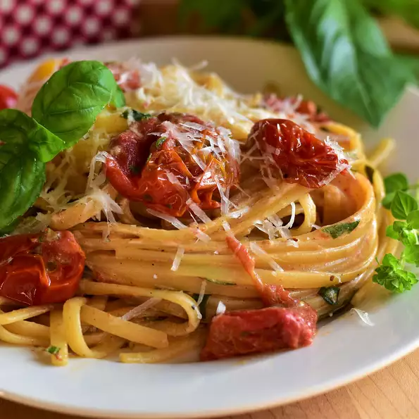

Tomato Pasta

Description
Roasting enhances the flavors of any vegetable,
but seems to add a wonderful,
rich sweetness when done with cherry tomatoes.
This recipe takes that sweetness, complements it with fresh herbs and a touch of heat from red pepper flakes,
with some low-fat ricotta to smooth it all out.
I topped it with some salty, nutty Pecorino cheese.
Ingredients
- 2 pounds red cherry tomatoes, halved
- ½ pound tomatoes, roughly chopped
- 3 cloves garlic, thinly sliced
- 3 tablespoons chicken broth
- 1 tablespoon olive oil
- 1 tablespoon balsamic vinegar
- 1 teaspoon red pepper flakes
- ¾ teaspoon salt
- ½ teaspoon freshly ground black pepper
- ¼ cup julienned fresh basil leaves
- 2 tablespoons chopped flat-leaf parsley
- 1 tablespoon chopped fresh oregano
- 12 ounces whole wheat linguine
- ½ (16 ounce) container low-fat ricotta cheese
- ½ cup finely shredded Pecorino Romano cheese
Step
- Step 1: Preheat the oven to 350 degrees F (175 degrees C).
- Step 2: Combine all tomatoes, garlic, chicken broth, olive oil, balsamic vinegar, red pepper flakes, salt, and pepper in a large, glass baking dish; toss to coat.
- Step 3: Roast in the middle of the preheated oven, stirring regularly, until tomatoes are tender, about 45 minutes. Remove from the oven and stir in basil, parsley, and oregano.
- Step 4: When the tomatoes have been roasting for about 35 minutes, bring a large pot of lightly salted water to a boil. Cook linguine at a boil until tender yet firm to the bite, 5 to 7 minutes (cook for 2 minutes less than package directions.) Drain and return to the pot.
- Step 5: Add the roasted tomatoes and herbs to the linguine and cook over medium-low heat for 2 minutes. Add ricotta cheese and stir until melted and smooth.
- Step 6: Serve topped with Pecorino Romano cheese.